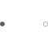
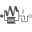
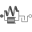
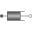

PartialCompliantWithRelativeStatesPartial model for the compliant connection of two rotational 1-dim. shaft flanges where the relative angle and speed are used as preferred states |

|
Information
This information is part of the Modelica Standard Library maintained by the Modelica Association.
This is a 1-dim. rotational component with a compliant connection of two rotational 1-dim. flanges where inertial effects between the two flanges are neglected. The basic assumption is that the cut-torques of the two flanges sum-up to zero, i.e., they have the same absolute value but opposite sign: flange_a.tau + flange_b.tau = 0. This base class is used to built up force elements such as springs, dampers, friction.
The relative angle and the relative speed are defined as preferred states. The reason is that for some drive trains, such as drive trains in vehicles, the absolute angle is quickly increasing during operation. Numerically, it is better to use relative angles between drive train components because they remain in a limited size. For this reason, StateSelect.prefer is set for the relative angle of this component.
In order to improve the numerics, a nominal value for the relative angle can be provided via parameter phi_nominal in the Advanced menu. The default is 1e-4 rad since relative angles are usually in this order and the step size control of an integrator would be practically switched off, if a default of 1 rad would be used. This nominal value might also be computed from other values, such as "phi_nominal = tau_nominal / c" for a rotational spring, if tau_nominal and c are more meaningful for the user.
See also the discussion State Selection in the User's Guide of the Rotational library.
Parameters (2)
| phi_nominal |
Value: 1e-4 Type: Angle (rad) Description: Nominal value of phi_rel (used for scaling) |
|---|---|
| stateSelect |
Value: StateSelect.prefer Type: StateSelect Description: Priority to use phi_rel and w_rel as states |
Connectors (2)
Extended by (6)
|
Modelica.Mechanics.Rotational.Components
Parallel connection of freewheel and clutch |
|
|
Modelica.Mechanics.Rotational.Components
Clutch based on Coulomb friction |
|
|  |
Modelica.Mechanics.Rotational.Components
Backlash connected in series to linear spring and damper (backlash is modeled with elasticity; at start of contact the flange torque can jump, contrary to the ElastoBacklash model) |
|  |
Modelica.Mechanics.Rotational.Components
Backlash connected in series to linear spring and damper (backlash is modeled with elasticity) |
|
Modelica.Mechanics.Rotational.Components
Linear 1D rotational spring and damper in parallel |
|
|  |
Modelica.Mechanics.Rotational.Components
Linear 1D rotational damper |